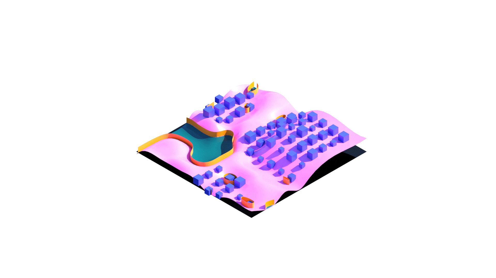

ANIMATE SEA LEVEL RISE
Academic Project
Fall 2021
Team member: Esther Xie, Angela Zhu, Gerardo Corona
GSD 6338 Introduction to Computational Design
Instructor: Jose Luis García del Castillo y López
Role in Team: concept development (80%), programming (80%), representation (30%)
In this project, our team aims to develop a grasshopper-based tool that helps designers and non-professionals to understand the impact of sea-level rise in their local contexts and existing strategies dealing with sea-level rise. Users can manipulate the topography and density of housing to create a site close to their context. The tool can then simulate four possible scenarios: retreat, defend, surrender, and accommodate.
This project aims to function as an early design tool to help urban designers understand potential impacts of sea level rise on their sites. It is also an effective communication tool that help visualize sea level rise to community.

The user creates the site by manipulating topography and building density.

Scenario 1: surrender, leaving the site to flooding.

Scenario 2: accommodate, lifting buildings as water level rises.
Scenario 3: defend, changing topography and building seawall.

Scenario 4: retreat, moving building to higher ground.